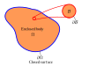
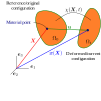

[O1]: Develope awareness and familiarity with the fundamental conservation laws that govern continuum mechanics.
After this lecture we will able to:
Describe motion using Lagrangian and Eulerian descriptions.
Define strain and stress tensors and calculate their invariants.
Describe the fundamental conservation equations of continua.
What is the continua?
It is an idealization of matter substances that assumes it is continuos at all scales.

In a continuum with volume defined by solid region \(\Omega\) with closed surface \(\partial \Omega\), it is always possible to find a subregion \(\mathcal{B} \subset \Omega \) with closed surface \(\partial \mathcal{B}\) that is also a continuum body.
In reality if we keep "zooming in" we will eventually reach a point where the matter is made of particles. Eg.
Soils (particle level)
Molecules (molecular level)
Atoms (atomic level)
Fundamental particles (quantum level)
We hypothesize that matter is a continuum if the smallest of the large-scale characteristic lengths of a body (\(L_{min}\)) are much larger than the largest of the small-scale characteristic lengths of the microscopic level (\(D_{max}\)).
\(L_{min}>> D_{max}\)
Example 2.1
For the problems illustrated below, asses if the hypothesis of continuum is valid.
Body configurations

A body in its reference configuration undergoes a deformation mapped by the deformation function \(\boldsymbol{x}=\chi(\boldsymbol{X}, t)\), that takes material point coordinates \(\boldsymbol{X}\) and transforms them into spatial point coordinates \(\boldsymbol{x}\).
Body configurations
The displacement field \(\boldsymbol{u}\) defines the displacement of a material point from its reference position to its current position.
\(\boldsymbol{u}=\boldsymbol{x}-\boldsymbol{X}\)
Time differentiation
Are properties that are independent of the amount of matter in the body and are trackable for each material point. Eg. displacement, velocity, acceleration, temperature, pressure, etc.
We can differentiate scalar, vector, and tensor fields with respect to time following a material point a.k.a. Lagrangian description of movement or a spatial point a.k.a. Eulerian description of movement as follows:
We can denote the rate of change of any intensive property of a material point as:
\(\dot{\alpha}= \frac{D \alpha}{Dt}, \ \ \dot{\boldsymbol{a}}=\frac{D \boldsymbol{a}}{Dt}, \ \ \dot{\boldsymbol{S}}=\frac{D \boldsymbol{S}}{Dt}\)
To achieve this we fixe position \(\boldsymbol{X}\).
Note that we can now define the material point velocity and acceleration as:
This are Lagrangian variables. But why if we want to track then stationed in a fixed point?
Realize that when tracking a material point we let for example \(\boldsymbol{v}(t)\) be a function of time only. We now are interested in tracking the property at the Eulerian point \(\boldsymbol{x}\) or \(\boldsymbol{v}(\boldsymbol{x}, t)\):
\(\begin{align*}
\boldsymbol{X}+\boldsymbol{u}(\boldsymbol{X})+ d \boldsymbol{x}
&= \boldsymbol{X}+d \boldsymbol{X}+ \boldsymbol{u}(\boldsymbol{X}+d \boldsymbol{X}) \\
\boldsymbol{u}(\boldsymbol{X})+ d \boldsymbol{x} &= \boldsymbol{u}(\boldsymbol{X}+d \boldsymbol{X})+d \boldsymbol{X} \\
d \boldsymbol{x}&= d \boldsymbol{X} + \boldsymbol{u}(\boldsymbol{X}+d \boldsymbol{X})- \boldsymbol{u}(\boldsymbol{X})\\
d \boldsymbol{x}&= d \boldsymbol{X} + \nabla \boldsymbol{u} d \boldsymbol{X}\\
d \boldsymbol{x}&= (\nabla \boldsymbol{u}+ \boldsymbol{I}) d \boldsymbol{X}
\end{align*} \)
Note that we still require a way to measure the "amount" of deformation. We can do this taking the ratio of the magnitudes of the deformation over the original length of a fiber.
\(\varepsilon=\frac{\Delta L}{L_0}\)
\(\begin{align*}
d \boldsymbol{x} \cdot d \boldsymbol{x}&= \boldsymbol{F} d \boldsymbol{X} \cdot \boldsymbol{F} d \boldsymbol{X} \\
|| d \boldsymbol{x} ||^2&= d \boldsymbol{X} \cdot \boldsymbol{F}^T \boldsymbol{F} \cdot d \boldsymbol{X} \\
\end{align*} \)
As mentioned before \(\boldsymbol{u}\) is defined between two "snapshots" indifferent of time. In some engineering applications, and more importantly in numerical modelling we calculate change in very small or infinitesimal increments. Therefore, we can safely assume that \(\nabla \boldsymbol{u}^T \nabla \boldsymbol{u} \approx \boldsymbol{0}\)
Note that the trace of the strain tensor is the sum of the axial strains, which is equal to the volumetric strain (\(\varepsilon_v\)) also is the divergence of the displacement vector field:
Note that the deviatoric strain tensor represents the distortions of the body, while the volumetric strain tensor the dilation or compression of the body.
Deviatoric strain
The invariants of a tensor are scalar values that are independent of the coordinate system. In constitutive modeling, we use invariants because it facilitates and reduce the computational cost associated with matrix operations.
Note that the trace of a tensor is invariant. Besides the norm of the deviatoric tensor is also an invariant. Furthermore, any operation and combination of invariants is also an invariant.
Find and expression for the deformation function of pure extension/compression deformation. Then determine the deformation gradient tensor, the small strain tensor, the deviatoric strain tensor, and volumetric strain.
Example 2.3
Find and expression for the deformation function of simple shear deformation. Then determine the deformation gradient tensor, the small strain tensor, the deviatoric strain tensor, volumetric strain, and deviatoric strain. Show that \(\gamma_{xy}= 2\varepsilon_{xy}\)
Example 2.4
Find and expression for the deformation function of pure shear deformation. Then determine the deformation gradient tensor, the small strain tensor, the deviatoric strain tensor, volumetric strain, and deviatoric strain.
The velocity gradient tensor
The velocity gradient tensor is defined with the spatial coordinates as:
The differential of the velocity could be express ass:
\(\begin{align*}
d \boldsymbol{v}^s&= \cfrac{\partial \boldsymbol{v}^s}{\partial \boldsymbol{x}} d \boldsymbol{x} \\
&= \boldsymbol{L} d \boldsymbol{x}
\end{align*}\)
Strain rate tensor
We can now decompose \(\boldsymbol{L}\) into a symmetric and skew part.
Let's start measuring the rate of change of a fiber in the current configuration:
\( \begin{align}
\frac{\partial (d \boldsymbol{x} \cdot d \boldsymbol{x})}{\partial t} &= d \frac{\partial \boldsymbol{x} }{\partial t} \cdot d \boldsymbol{x} + d \boldsymbol{x} \cdot d \frac{\partial \boldsymbol{x} }{\partial t} \\
&= d \boldsymbol{v}^s \cdot d \boldsymbol{x} + d \boldsymbol{x} \cdot d \boldsymbol{v}^s \\
&= ( d \boldsymbol{x} \boldsymbol{L} ) \cdot d \boldsymbol{x} + d \boldsymbol{x} \cdot ( \boldsymbol{L} d \boldsymbol{x} ) \\
&= d \boldsymbol{x} \cdot (\boldsymbol{L}^T+ \boldsymbol{L}) \cdot d \boldsymbol{x} \\
&= 2 d \boldsymbol{x} \cdot \boldsymbol{D} \cdot d \boldsymbol{x} \\
\end{align} \)
I will give without proof the following relationship:
\(\frac{\partial d\boldsymbol{x} \cdot d\boldsymbol{x} }{\partial t}= 2 d \boldsymbol{X} \cdot \dot{\boldsymbol{\varepsilon}} \cdot d \boldsymbol{X}\)
\( \begin{align}
d \boldsymbol{X} \cdot \dot{\boldsymbol{\varepsilon}} \cdot d \boldsymbol{X} &= d \boldsymbol{x} \cdot \boldsymbol{D} \cdot d \boldsymbol{x}\\
&= d \boldsymbol{X} \cdot \boldsymbol{F}^T \cdot \boldsymbol{D} \cdot \boldsymbol{F} \cdot d \boldsymbol{X} \\
\end{align} \)
We now have an expression relating the Lagrangian and Eulerian strain rate tensors:
Note that for infinitesimal deformation, the deformation gradient tensor approaches the identity matrix, and the Lagrangian and Eulerian strain rate tensors are equal.
For any point \(\boldsymbol{X} \in \Omega\) there exists a stress tensor that acts on the set of planes with normal \(\boldsymbol{n}\) that pass trough \(\boldsymbol{X}\) such that:
The principal stresses of a stress tensor are the eigenvalues of the stress tensor, and the principal directions are the eigenvectors of the stress tensor.
Stress invariants
Note that the principal stresses are invariants of the stress tensor. Recall that the trace of the tensor is also invariant.
An undrained isotropic triaxial compression test is conducted on a soil specimen. At failure, the stress on the piston read 100 kPa. The initial cell pressure read was 50 kPa. Find the mean stress, deviatoric stress, and the principal stresses at failure. Plot the stress path in a \(q\) vs \(p\) plot. What is the slope of the path?
Principle of effective stresses
\(\boldsymbol{\sigma}'\):
\( \boldsymbol{\sigma}'= \boldsymbol{\sigma}- u \boldsymbol{I} \)